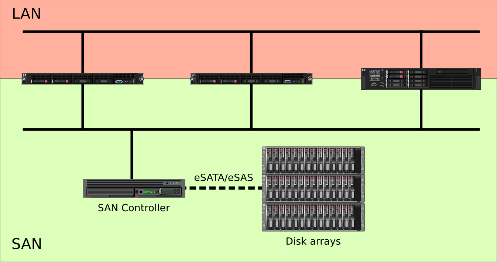

OpenStack. Almacenamiento de Volúmenes
Alberto Molina Coballes / @alberto_molina y José Domingo Muñoz Rodríguez / @Pledin_JD

Theme by reveal.js
- Conceptos previos
- Volúmenes, instantáneas y lanzamiento de instancias desde volúmenes con Horizon
- Volúmenes, instantáneas y lanzamiento de instancias desde volúmenes nova cli
- Funcionamiento interno de los volúmenes
Conceptos previos
Redes de almacenamiento
Storage Area Network (SAN)
- Red dedicada de almacenamiento que proporciona dispositivos de bloques a los servidores
- Los elementos típicos de una SAN son:
- Red dedicada alta velocidad (cobre o fibra óptica)
- Equipos o servidores que proporcionan el almacenamiento
- Servidores que utilizan los dispositivos de bloques
- Los protocolos más utilizados son iSCSI y Fibre Channel (FC)
Storage Area Network (SAN)

SAN en OpenStack
- Cinder (OpenStack block storage) gestiona de forma sencilla una SAN
- Puede utilizar una red específica para almacenamiento o alguna de las redes internas del cloud (gestión, datos, etc.)
- Soporta gran cantidad de tecnologías libres de almacenamiento: GlusterFS, LVM, ZFS o Ceph RBD
- Además incluye gran cantidad de controladores para equipos específicos
Terminología
- Volumen: Dispositivo de bloques que se puede asociar y desasociar de una instancia cuando se desee
- Utilizado para proporcionar almacenamiento permanente o independiente de la vida de una instancia
- Un volumen en cinder es equivalente a una unidad lógica en SAN
- Cinder es equivalente a Amazon EBS
- Hasta ahora no es posible asociar un volumen a más de una instancia a la vez o modificar el tamaño de un volumen "en caliente"
Volúmenes con GUI
- Crear un volúmen, asociarlo y desasociarlo a una instancia
- Formatear volúmenes
- Redimensionar volúmenes
- Instantáneas de volumen (en uso o no)
- Iniciar una instancia desde un volumen
Volúmenes con OpenStack CLI
Volúmenes
#Listar volúmenes
$ nova volume-list
#Crear un volumen
$ nova volume-create --display-name NOMBRE SIZE
#Asociar un volumen a una instancia
$ nova volume-attach SERVIDOR_ID VOLUMEN_ID DISPOSITIVO
#Desasociar un volumen de una instancia
$ nova volume-detach SERVIDOR_ID VOLUMEN_ID
#Crear una instantánea de volumen
$ nova volume-snapshot-create [opciones] VOLUMEN_ID
Redimensionar volúmenes
Para hacer esta operación necesitamos el cliente cinder.
# pip install python-cinderclient
#Redimensionar un volumen
$ cinder extend ID_VOLUME NEW_SIZE
Conceptos avanzados
- Volúmenes con LVM
- Compartir volumen con iSCSI: tgt